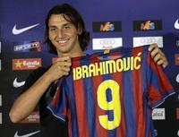
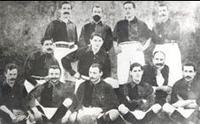
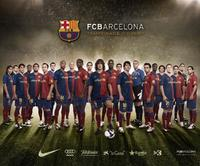
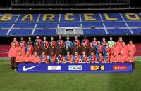

概括介绍:
巴塞罗那俱乐部是全世界著名的足球俱乐部之一，在该队逾百年的历史上，共获得各类冠军70次，并且是三支获得过欧洲三大杯冠军的“大满贯”球队之一，2009年更是获得足坛史无前例的六冠王。该队素以拉玛西亚青训体系出色而闻名世界足坛，但也从不缺乏积极引入世界级巨星的手笔，50年代的库巴拉，70年代的克鲁伊夫，80年代的马拉多纳，90年代的罗马里奥、罗纳尔多、里瓦尔多以及进入21世纪后的罗纳尔迪尼奥都是各个时期的代表人物。巴塞罗那还在青训上闻名遐迩，球队现役球员中，巴尔德斯，普约尔，皮克，哈维，伊涅斯塔，梅西，博杨，布斯克茨，佩德罗，赫弗伦等球员皆是出自巴萨拉玛西亚青训营。而且拉玛西亚青训营出产的球员在其他俱乐部中担任主力球员甚至核心的也有，例如阿森纳的核心法布雷加斯、利物浦门将雷纳等。

伊布拉希莫维奇
1899年，瑞士企业家Joan Gamper建立了巴塞罗那队，其中大部分是英格兰和德国等外国人，只有很少部分是当地的巴塞罗那人。1899年12月，该队首次参加比赛，在该队的影响和推动下，西班牙王室决定创立西班牙国王杯足球赛。1901年，首届国王杯赛举行，巴塞罗那未能如愿捧杯，直至1910年才首次折桂，随后又在1912、1913年两度捧杯。20年代，该队夺冠的势头势不可挡，十年内五次捧杯，令其他球队望尘莫及。随着足球运动在西班牙的普及发展，西班牙足协决定在1928年建立正式的联赛体制。在首届联赛中，巴塞罗那队一举夺冠，然而在接下来的十余年中，该队表现的不尽如人意，未能再次夺冠。直至1945年，该队才获得久违16年的联赛冠军。继而又在1948和1949年连续两次夺冠，成为西班牙最著名的俱乐部之一。50年代，巴塞罗那开始引进国外优秀选手加盟，使球队实力明显增强。1950年，匈牙利球星库巴拉加盟该队，同时该队又聘请陶奇克为教练，在陶奇克和库巴拉率领下，巴塞罗那进入了史无前例的高峰期，被称为“库巴拉”时代。1951-1961年，库巴拉为巴塞罗那效力11年，共四夺联赛冠军，五夺杯赛冠军，两次捧得欧洲联盟杯，年年无空白。

巴萨
“库巴拉”时代结束后，西班牙足坛霸主换成了皇家马德里。在1961年-1990年长达30年的漫长岁月里，巴塞罗那仅获得两次联赛冠军。1973年，该队高价聘请了欧洲最佳球员克鲁伊夫加盟，次年夺回了久违14年的联赛冠军。1985年，该队在德国球星舒斯特尔的带领下，才在时隔11年后再次获得联赛冠军。80年代至90年代初，该队相继引进了荷兰著名球星科曼、保加利亚球星斯托伊奇科夫、丹麦的劳德鲁普及巴西的罗马里奥等。加上本国的一些球星，终于在90年代走出低谷，重现昔日辉煌。在1991年到1994年，该队四次连续夺得联赛冠军。一时间巴塞罗那名扬世界足坛。1996年，该队引进了巴西“神童”罗纳尔多，夺得欧洲优胜者杯和西班牙国王杯，但联赛冠军被皇家马德里夺得，俱乐部对罗布森继续执教的信心不足，于是从阿贾克斯队请来了功勋教头范加尔，希望用荷兰风格改变球队。皇家马德里和巴塞罗那这两支西班牙绿茵豪门是天生的冤家对头，多少年来一直明争暗斗。“白色马德里”和“蓝红军团”的比赛从来都是全西班牙乃至全欧洲津津乐道的话题。

巴萨
米圭利，桑切斯，卡拉斯科，舒斯特尔，乌鲁蒂，马拉多纳，苏比萨雷塔，莱因克尔，巴克罗，贝吉里斯坦，阿摩尔，科曼，劳德鲁普，费雷尔，斯托伊奇科夫，瓜迪奥拉，罗马里奥，塞尔吉，阿贝拉多，罗纳尔多，路易斯.恩里克，费戈，里瓦尔多，克鲁伊维特，普约尔，萨维奥拉这些名字都在巴萨度过了最辉煌的时代。
进入到21世纪，巴塞罗那在新主席拉波尔塔的率领下采取了务实的态度来经营俱乐部。他上任后引入了巴西新生代的“球王”罗纳尔迪尼奥，邀请荷兰教练里杰卡尔德执教，并在2003-2004赛季创造了一个不小的奇迹，在联赛中后来居上超过了皇马位居第二名。2004至2005赛季，巴萨势如破竹终于赢得了西甲冠军。并于2005-2006赛季成功在西甲卫冕并获得了历史上的第二次冠军联赛冠军。

巴萨
2009年5月28日，第54届冠军杯决赛在罗马奥林匹克球场打响，在决赛巴塞罗那2比0击败曼联，第3次夺得冠军杯，加之西班牙国王杯冠军，西甲联赛冠军，欧洲超级杯冠军，西班牙超级杯冠军，世俱杯冠军，巴萨成为世界足球史上首支“六冠王”，开创了“梦二加强版”的时代盛世。
2010年5月17日，西甲联赛结束。巴萨以打破记录的99分获得了俱乐部第20次西甲冠军。
{kind=link}
{kind=link}
{kind=link}
{kind=link}